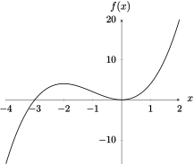
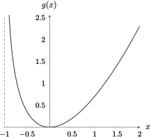
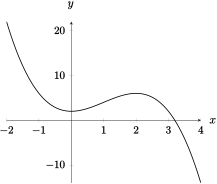
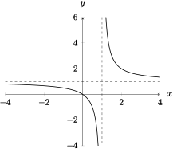
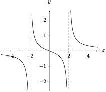
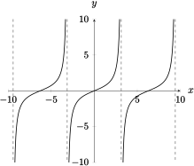
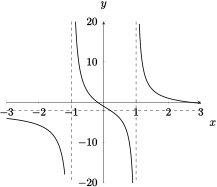

Section 3.5 Summary of Curve Sketching
Objectives
Sketch curves using calculus and other qualitative characteristics of a function (domain, intercepts, asymptotes, symmetry)
Subsection 3.5.1 Before Class
https://mymedia.ou.edu/media/3.5-1/1_lwewtbkrSubsubsection 3.5.1.1 Summary of Graphing
Guidelines for Curve Sketching.
Find the domain of the function.
Identify \(x-\) and \(y-\)intercepts.
Locate symmetry in the graph, i.e. determine if the function is even, odd, periodic, etc.
Locate any asymptotes: vertical or horizontal.
Determine the intervals where the function is increasing or decreasing.
Find local maxima/minima.
Determine the intervals where the function is concave up/concave down.
With this information, you can confidently sketch the graph.
Example 3.5.1.
Sketch the graph of \(f(x) = x^3 + 3x^2\)
Solution.

Example 3.5.2.
Sketch the graph of \(g(x) = \dfrac{x^2}{\sqrt{x+1}}\)
Solution.

Subsection 3.5.2 Pre-Class Activities
Example 3.5.3.
Sketch the graph of \(y=2+3x^2-x^3\)
Solution.

Example 3.5.4.
Sketch the graph of the function \(y = \dfrac{x^2 + 5x}{25-x^2}\)Subsection 3.5.3 In Class
Example 3.5.5.
Sketch the graph of \(y = \dfrac{x}{x-1}\)
Solution.

Example 3.5.6.
Sketch the graph of \(f(x) = \dfrac{x^2}{x^2-4}\)Example 3.5.7.
Sketch the graph of \(y = \dfrac{x^3}{x^3+1}\)Example 3.5.8.
Sketch the graph of \(g(x) = \dfrac{x}{\sqrt{x^2-1}}\)Example 3.5.9.
Sketch the graph of \(y=\dfrac{x}{x^2-4}\)
Solution.

Example 3.5.10.
Sketch the graph of \(y=\dfrac{x^3}{x-2}\)Example 3.5.11.
Sketch the graph of \(y = \dfrac{\sin x}{1+\cos x}\)
Solution.

Subsection 3.5.4 After Class Activities
Example 3.5.12.
Sketch the graph of \(y = \dfrac{1+5x-2x^2}{x^2-1}\)
Solution.
